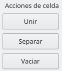
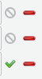
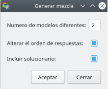

Kmixtest
1. Introducción, ¿Que es kmixtest?
Kmixtest es una herramienta con el objetivo de prestar ayuda en la preparación de exámenes escritos (en papel) que el alumno completará para su posterior revisión por el profesor.
Las tareas en las que este programa intenta ayudar facilitando la tarea son:
l Permite la generación del examen sin requerir un editor de texto, el fichero pdf resultante posteriormente se puede imprimir para obtener las copias que el alumno completará.
l Unifica el formato de las cabeceras, es posible guardar plantillas de examen que contengan una cabecera predefinida, así tan solo es necesario completar las preguntas que debe contener el examen.
l Permite generar múltiples modelos de examen los cuales contienen las mismas preguntas pero en diferente orden.
l Genera un fichero pdf solucionario con objetivo de ser impreso también y que permita una corrección mas sencilla por parte del profesor.
2. Interfaz
Cuando la aplicación es iniciada se presenta una nueva ventana con los siguientes componentes:
Las diferentes acciones relacionadas con el manejo de archivos que puede gestionar la aplicación son agrupadas en el menú nombrado ”proyecto”.
Desde el menú “proyecto” podemos utilizar las siguientes acciones:
l Nuevo: Genera un nuevo examen, limpiando la interfaz en caso que ya tenga elementos introducidos.
l Cargar examen: Carga un fichero con extensión “kmt”, el cual contiene un examen previamente guardado por la aplicación, como resultado la aplicación es cargada con todo el contenido del examen.
l Cargar plantilla: Carga un fichero con extensión “kmt”, el cual puede contener un examen completo o tan solo un diseño de cabecera, como resultado la aplicación tan solo carga la cabecera en el examen actual.
l Guardar: Guarda el contenido actual de la aplicación en un fichero “kmt”, si previamente no había sido guardado en este formato, se presentará un cuadro de dialogo que permite establecer el nombre del fichero.
l Guardar como: Guarda el contenido actual de la aplicación en un fichero “kmt”, se presenta obligatoriamente un cuadro de dialogo con el cual seleccionar el nombre del fichero de destino.
l Salida: Fuerza una salida de la aplicación sin guardar el contenido que actualmente pudiera tener la aplicación.
Las opciones relacionadas con el propio examen que está siendo generado son agrupadas en el menú nombrado como “Mezclador”.
Desde el menú “mezclador” podemos utilizar las siguientes acciones:

l Configurar cabecera: abre un editor para poder configurar el diseño y el contenido que debe aparecer como cabecera del documento examen.
l Configurar salida: establece las diferentes opciones que permite el programa para generar modelos de examen
l Generar mezcla: Repite una mezcla aleatoria sobre las preguntas que actualmente contiene el examen en caso que no estemos satisfechos con el resultado anterior que hemos previsualizado.
Las opciones relacionadas con la previsualización e impresión del examen actualmente son agrupadas en el menú nombrado como “Imprimir”.
 Desde el menú “imprimir” podemos utilizar las siguientes acciones:
Desde el menú “imprimir” podemos utilizar las siguientes acciones:
l Previsualizar impresión: Abre un dialogo mediante el cual podemos ver como será el resultado del fichero pdf a generar.
Desde este dialogo, es posible ajustar parámetros como el formato u orientación de la página, así como realizar la impresión directa del contenido.
l Imprimir examen: Genera el fichero pdf con los diferentes modelos de examen configurados y con cabecera.
El programa permite generar exámenes compuestos de un numero ilimitado de preguntas de tres tipos diferentes:
l Pregunta simple: Un tipo de pregunta mediante la cual el profesor propone realizar un desarrollo por parte del alumno en un espacio libre que continua después del enunciado de la pregunta.
l Pregunta de test: Un sencillo cuestionario el cual propone un determinado conjunto de respuestas a una cuestión y que el alumno debe marcar cual o cuales son las correctas (o falsas).
l Actividad de unir: Un cuestionario que presenta opciones a ambos lados de forma desordenada y que propone que el alumno enlace cada opción del lado izquierdo con la respuesta correcta en el lado derecho.
La interfaz del programa presentará las diferentes preguntas introducidas así como opciones de estas en la zona del listado de preguntas en el lado izquierdo de la aplicación.
Las diferentes preguntas van siendo acumuladas por orden de introducción en el panel listado de preguntas, aunque este orden no representa el orden en el cual pueden aparecer las preguntas en el examen generado.
Este panel presenta una tabla de cuatro columnas nombradas como “Orden”, “Fijada”, “Enlazada” y “Titulo”, con el siguiente contenido:
l Orden: Contiene controles para mover un elemento hacia arriba o hacia abajo en el listado.
l Fijada: Contiene una casilla para establecer que dicha pregunta si debe aparecer en el examen en dicha posición de forma fija y obligatoria.
l Enlazada: Contiene una casilla para establecer que dicha pregunta y la siguiente deben aparecer juntas y en el orden que aparecen en este listado. Si se desea forzar una posición de dichas preguntas, esta opción debe ser combinada con la casilla “Fijada”.
l Titulo: Un breve comienzo del inicio del titulo configurado en la pregunta, para poder identificar la pregunta rápidamente en el listado.
Las diferentes preguntas introducidas se completarán y configuraran con las diferentes opciones que cada una de ellas ofrezca a través de las opciones que serán mostradas en la parte derecha de la aplicación en la zona de contenido.
Cuando no hay ninguna pregunta o aun no ha sido seleccionada previamente, esta zona es mostrada sin contenido.
3.
Generación de una cabecera
Una prueba de examen generalmente debe contener una cabecera en la primera pagina que identifique la prueba, no obstante según gustos del profesor o requerimientos del centro de estudios puede condicionar el formato.
Cuando utilizamos la opción: Mezclador » Configurar cabecera un dialogo nos permite diseñar una cabecera para el documento.
El dialogo nos ofrece controles para la organización de elementos ordenados en forma de columna en la parte derecha del dialogo, en la parte inferior ordenados en linea son presentados controles para introducción de los diferentes elementos que puede contener una cabecera.
A través de este dialogo podemos representar una cuadricula de elementos que conformen el contenido de nuestra cabecera, para ello utilizaremos los diferentes controles que nos proporciona el dialogo con las siguientes funcionalidades:
Configurador de la malla: Permite establecer la cantidad de divisiones o zonas que debe contener la cabecera y en las que se pueden introducir elementos o bien utilizar a modo de separador.
Este control especifica mediante dos deslizadores la cantidad de filas y columnas a utilizar, inicialmente establecido a 1x1, conforme estos deslizadores son cambiados, el panel de previsualización de la cabecera se ajusta para mostrar la nueva organización.
Acciones sobre celdas: Permite realizar uniones entre diferentes celdas seleccionadas para así afinar mejor el formato final de la distribución de elementos en la malla.
Si la celda seleccionada, anteriormente fué unida, mediante el control de separar se vuelve a dejar con la forma original que presentaba en la malla.
Para poder realizar uniones o separaciones de las celdas, estas deben de estar vacías, es decir, sin contenido añadido. Así también si deseamos cambiar algún elemento anteriormente introducido, previamente deberemos de vaciar la celda mediante el control “vaciar”.
Una vez establecido el diseño que va presentar la cabecera, y para que ofrezca la utilidad a la que va destinada debe ser rellenada con elementos que permitan representar el estilo del centro o el deseo del profesor, para ello se utilizarán las diferentes acciones de inserción que son presentadas en la parte inferior del dialogo de configuración de cabecera como botones pulsables.
Los diferentes elementos que pueden ser insertados presentan las siguientes características:
l Texto: Permite la introducción de un texto determinado mediante un cuadro de dialogo de edición de texto que es presentado cuando el usuario pulsa el botón de acción. Si la celda ya contiene un texto introducido previamente, permite la edición de este.
l Imagen: Lanza un dialogo de selección de fichero para incrustar una imagen en la celda seleccionada, dicha imagen será redimensionada en caso que el tamaño original sea inadecuado para una organización homogénea de la cabecera, siempre conservando las proporciones de la imagen original.
l Nombre de estudiante: Permite la introducción rápida de un campo y hueco suficiente donde el estudiante debe escribir su nombre y así identificar la prueba por quien está realizada.
l Grupo: Permite la introducción rápida de un campo y hueco suficiente donde se ha de completar con la referencia de grupo al que va destinada la prueba.
l Fecha: Permite la introducción rápida de un campo y hueco suficiente donde se ha de completar con la fecha en la que la prueba es realizada.

Posteriormente a la introducción de elementos, estos pueden ser alineados como se desee en la celda mediante las acciones de alineación.
Inicialmente los elementos son introducidos con alineación centrada, pudiendo ser cambiada posteriormente por otra, la alineación actual en una celda siempre presentará el botón de acción correspondiente deshabilitado.
Una vez el diseño de cabecera ya está especificado, es necesario aceptar el cuadro de dialogo para que los cambios queden almacenados en el examen actual.
Si el dialogo es cancelado, los cambios no serán guardados y no se representara la cabecera actualmente configurada.
4. Un primer examen
Para documentar las diferentes acciones que dispone la aplicación se va a confeccionar un examen de prueba donde se irán utilizando todos los tipos de preguntas, en el proceso se irán comentando todas aquellas particularidades relacionadas con lo que se va realizando.
Se comenzará añadiendo una pregunta de cualquier tipo que se desee, en este caso se comenzará por el primer tipo de pregunta, “pregunta simple”, la cual representa un texto libre seguido de un hueco para que el alumno responda.

Cabe recordar que el hecho que la pregunta se inserte y aparezca en la lista como la “pregunta en la fila uno” no implicará necesariamente que dicha pregunta aparecerá en la primera posición, no obstante estas características son explicadas un poco mas adelante.
Cuando se ha pulsado el botón, una pregunta nueva ha sido añadida al examen y aparece representada en la lista de preguntas en la parte derecha de la interfaz.
Inicialmente, solo eso ha cambiado en el programa, no obstante esta pregunta aun no está completa, para poder completar dicha pregunta será necesario establecer elementos como el titulo que debe presentar y que representa la pregunta o prueba que realiza el profesor para que el alumno responda o desarrolle.
Para proceder a completar la pregunta, seleccionamos con el ratón el titulo de la pregunta en el listado de preguntas, que inicialmente solo esta completo con el texto del tipo de pregunta introducido, en este caso “pregunta simple”, esto presenta en la parte derecha de la aplicación el panel para configurar la pregunta y los posibles ajustes disponibles.
Una vez se muestra la configuración de pregunta en la parte superior del panel derecho tenemos las diferentes acciones que pueden configurarse en la pregunta en forma de una barra de iconos pulsables.
Algunas de estas acciones son comunes entre varios tipos de preguntas y algunas son especificas del tipo de pregunta.
Para el caso de una pregunta tipo “pregunta simple” las acciones que son presentadas son:
l Incluir una imagen que acompañará la pregunta, esta imagen será redimensionada para ser presentada en la parte derecha de la pregunta cuando sea representada en papel, fichero pdf en este caso. La imagen será redimensionada sin perder las proporciones para una representación óptima.
l Eliminar la imagen incrustada, solo estará activa en el caso que una imagen haya sido incrustada previamente.
l Bloquear la edición de la pregunta para protegerla ante cambios accidentales.
l Desbloquear la edición de la pregunta permitiendo la edición de los elementos.
l Deslizador para establecer el numero de lineas libres que debe acompañar a la pregunta para que el alumno responda.
l Acción para esconder la configuración cerrándola, esto no elimina el contenido actualmente rellenado.
El titulo puede ser modificado a través del cuadro de texto que se presenta como primer elemento editable de la configuración de pregunta.
Si se incluyen imágenes, estas son mostradas en el fondo del panel de configuración de la pregunta, estas son redimensionadas para acomodarse en el cuadro de configuración y no hace referencia al tamaño final que tiene la imagen en la pregunta, el tamaño final es calculado automáticamente para mostrarse correctamente.
Como elemento final, a modo informativo, se muestra la cantidad de lineas configuradas que se dejaran como espacio vacío para la respuesta.
Insertando una nueva pregunta y configurándola con un texto, una imagen y diez lineas para la respuesta.
Insertando una nueva pregunta con un titulo, esta vez sin imagen y con tan solo cinco lineas vacías.
Podemos ver que la lista de preguntas incluidas en el examen contiene tres preguntas, podemos comprobar el contenido de cada una de ellas realizando un clic con el ratón sobre el titulo correspondiente en el listado de preguntas.
Ahora que el examen ya dispone de varias preguntas introducidas puede ser interesante plantear algunas cuestiones referentes a como el programa presenta su funcionalidad.
Dado que el programa tiene como objetivo generar modelos de examen con la característica de poder alternar el orden de las preguntas entre diferentes modelos de examen, puede ser necesario que algunas preguntas mantengan un orden entre ellas, dado que sino, no es posible su respuesta.
Por ejemplo: un problema que a través de apartados configurados como preguntas independientes y que deben estar presentados en orden porque una respuesta tiene en cuenta el resultado del apartado anterior. O bien, preguntas que por la dificultad requiera que sean presentadas una necesariamente antes que otra.
Para estos casos se puede especificar a través de la lista de preguntas dos características:
l Preguntas “Fijadas”: Una pregunta fijada, es aquella que aparecerá en el examen en la posición que ocupa en la lista forzosamente, esta pregunta no podrá tener el orden alterado cuando aleatoriamente se generen los diferentes modelos de examen.
l Preguntas “Enlazadas”: Varias preguntas enlazadas son aquellas que deben estar agrupadas en cualquier modelo de examen generado y con el mismo orden en el que están enlazadas.
Un grupo de preguntas enlazadas, puede alterar su orden entre los diferentes modelos generados, por ello si se desea que ademas de mantener la agrupación de las preguntas, aparezcan en alguna posición concreta del examen, esta característica debe ser combinada con la de “preguntas fijadas” en cualquiera o en todas de las preguntas que conforman el grupo.
En este examen de ejemplo se ha aplicado la característica de pregunta enlazada a las dos primeras preguntas que hacían referencia a preguntas donde la segunda debe ser preguntada después de la primera.
Para ello solo se ha realizado clic con el ratón en la columna “enlazada” de la pregunta en la fila uno, que dado que no tenia previamente algún enlace y estos enlaces implican un mínimo de dos preguntas, se enlazan la pregunta seleccionada y la posterior, mostrándose en la tabla como enlazadas.
Con este ajuste ese grupo de preguntas debe aparecer junto en cualquier modelo de examen, no obstante podemos comprobar que la pregunta que se ha creado en la posición tres, es mas simple que las anteriormente introducidas, y que también debería de estar enlazada las anteriores.
Si realizáramos un clic sobre la columna enlazada de la pregunta tres, se enlazaría con las anteriores, pero en la tercera posición, lo cual seria erróneo, necesitamos que al ser mas simple que las anteriores esta aparezca como la primera del grupo, para ello tendremos que reposicionar la pregunta tres en el primer orden de la lista.
Para reposicionar la pregunta tres en la primera posición antes del grupo hacemos uso de los controles de la primera columna de la fila de la pregunta que deseemos reposicionar, moviendo la pregunta hacia posiciones superiores o inferiores, en este caso deseamos mover la pregunta a una posición superior y realizamos el clic en el primer control, lo que provocará que la pregunta sea reposicionada en una posición superior de la lista.
Se puede comprobar como la pregunta ha sido reposicionada a una posición superior, aparece ahora en la primera posición, dado que ha saltado el grupo de preguntas que no puede ser separado.
Ahora ya se puede añadir al grupo de preguntas enlazadas apareciendo como la primera pregunta del grupo, para ello se realiza clic en la columna enlazada. Así ahora conforman un grupo de tres preguntas que no puede ser separado.
Como las siguientes preguntas que nos interesa poner en el examen son mas prácticas y están relacionadas con el contenido de estas preguntas mas teóricas, nos interesa que estas preguntas que han sido agrupadas aparezcan primero en los diferentes modelos de examen, ya que no querríamos que los ejercicios de las preguntas aparezcan antes que las propias preguntas teóricas.
Para establecer que el grupo debe aparecer como las primeras preguntas de los modelos de examen, fijaremos una pregunta en el orden que deseemos que aparezca y como ademas están agrupadas, en la práctica todas aparecerán en la posición en la que están en la lista.
Posteriormente decidimos que continuamos introduciendo una nueva pregunta...
No obstante, puede que en algún momento introduzcamos un tipo de pregunta que no era el correcto, entonces podemos eliminar la pregunta que acabamos de introducir con el botón derecho del ratón sobre la pregunta, el cual ofrece un menú contextual que nos ofrece la acción de borrado de una pregunta.
Ahora pasamos a incorporar algunas preguntas de tipo test, para ello utilizamos el botón correspondiente de la barra superior.
De forma similar a las preguntas anteriormente introducidas, una pregunta de tipo test presenta una barra de acciones que configuran la pregunta.
Las acciones disponibles para preguntas de tipo test, son las siguientes:
l Añadir una nueva opción de respuesta, dado que es una pregunta de tipo test, este botón permite introducir una cantidad de opciones determinadas como posibles respuestas.
l Eliminar la ultima opción de respuesta introducida en el caso que haya opciones de respuesta introducidas.
l Incluir una imagen que acompañará la pregunta, esta imagen será redimensionada para ser presentada en la parte derecha de la pregunta cuando sea representada en papel, fichero pdf en este caso. La imagen será redimensionada sin perder las proporciones para una representación óptima.
l Eliminar la imagen incrustada, solo estará activa en el caso que una imagen haya sido incrustada previamente.
l Bloquear la edición de la pregunta para protegerla ante cambios accidentales.
l Desbloquear la edición de la pregunta permitiendo la edición de los elementos.
l Deslizador para establecer el numero de respuestas validas que contiene la pregunta de test, inicialmente configurado para una sola respuesta valida de entre las que se desee introducir, para aumentar el valor se moverá el deslizador hasta un máximo de las preguntas introducidas.
l Acción para esconder la configuración cerrándola, esto no elimina el contenido actualmente rellenado.
La forma de rellenar el titulo de la pregunta es similar a las ya introducidas en la aplicación, pero este tipo de pregunta permite introducir opciones de respuesta las cuales aparecerán como opciones que el alumno debe marcar identificando la respuesta.
Cuando introducimos opciones, estas van siendo acumuladas en la parte inferior del panel de configuración de pregunta.
Estas opciones de respuesta, pueden contener imagen, texto, o imagen con texto.
Para introducir el texto se completará el cuadro de texto que inicialmente aparece vacío.
Para añadir una imagen a la opción pulsaremos el botón de añadir imagen que acompaña a cada opción introducida junto al cuadro de edición de texto. A través de un dialogo nos permitirá elegir un fichero de imagen para incrustarlo junto a la opción de respuesta. Una vez incrustada la imagen pasará a sustituir el icono abría el dialogo de introducción de imagen.
En caso de querer eliminar una imagen previamente incrustada en una opción, tan solo debemos realizar un clic sobre la imagen para que esta quede otra vez eliminada de la opción.
En la parte mas derecha de la linea que configura la opción, encontramos unas marcas que advierten de que no ha sido especificada la respuesta correcta de entre las opciones configuradas. Según el numero de respuestas validas que hayan sido especificadas con el deslizador, deben marcarse las opciones validas de entre las introducidas.
Para establecer una opción como valida, debe pulsarse la marca justo a la derecha del cuadro de edición de texto de la opción, cambiando este a una marca representativa de una pregunta correcta y los demás como pregunta no correcta.
En el caso que haya mas de una respuesta correcta que haya que especificar, las restantes opciones aun presentaran la marca de advertencia que aun es necesario fijar mas respuestas como validas.
En el caso que activemos por error la marca en una opción que no fuera la deseada como se puede ver en la imagen anterior, se puede realizar la operación inversa realizando otra vez clic sobre la marca que indica pregunta correcta para que esta sea desmarcada y poder marcar la respuesta correcta.
|  |
Si deseamos eliminar una opción de las introducidas, haremos uso de el ultimo elemento, o el elemento mas a la derecha de la linea que configura la opción de test, si pulsamos el icono con un “-” en rojo, la opción de respuesta será eliminada de la lista.
Ahora se introducirá una pregunta nueva de un nuevo tipo, actividad de unir.
Este tipo de pregunta, es similar a las preguntas de tipo test, también tienen opciones de respuesta configuradas, no obstante en este tipo todas las opciones de respuesta son validas, se pretende que el alumno relacione conceptos o la opción mas adecuada para cada uno de los elementos que son mostrados de forma enfrentada y en orden aleatorio.
Las opciones de configuración para dicho tipo de preguntas son las siguientes:
l Añadir una nueva opción para enlazar elementos.
l Eliminar la ultima opción de enlazar elementos introducida en el caso que haya opciones previamente introducidas.
l Incluir una imagen que acompañará la pregunta, esta imagen será redimensionada para ser presentada en la parte derecha de la pregunta cuando sea representada en papel, fichero pdf en este caso. La imagen será redimensionada sin perder las proporciones para una representación óptima.
l Eliminar la imagen incrustada, solo estará activa en el caso que una imagen haya sido incrustada previamente.
l Bloquear la edición de la pregunta para protegerla ante cambios accidentales.
l Desbloquear la edición de la pregunta permitiendo la edición de los elementos.
l Acción para esconder la configuración cerrándola, esto no elimina el contenido actualmente rellenado.
Como se puede observar, las opciones son similares a las preguntas de test anteriormente descritas.
Una pregunta de tipo “actividad de unir” presenta el siguiente aspecto una vez completada con algunas opciones.
Cabe hacer notar, que cuando se configuran las opciones para los elementos a unir, se han de completar en la misma opción los elementos que están relacionados, aunque luego en el modelo generado se desordenarán aleatoriamente para que así tenga sentido la actividad de unir que es presentada al alumno.
De forma similar a las opciones de preguntas tipo test, estas opciones para relacionar elementos, pueden consistir de texto, imágenes, o texto con imagen en cualquiera de los dos lados que son relacionados.
La forma de introducir las imágenes es similar a las opciones de las preguntas de tipo test anteriormente descritas. Realizando un clic en el icono de añadir imagen, se presenta un cuadro de dialogo para seleccionar una imagen que posteriormente se mostrará sustituyendo el mismo icono y que en caso de desear eliminar la imagen seleccionada, realizando otra pulsación sobre la imagen es eliminada.
Introduciendo opciones aun sin imágenes seleccionadas | Introduciendo opciones con imágenes seleccionadas |
Así pues y a modo resumen, podemos introducir un par de preguntas adicionales, y comentar como han sido configuradas:

Se puede comprobar que es una pregunta del tipo “pregunta de test” porque solo tiene opciones de las cuales se tendrá que seleccionar dos correctas de las tres existentes, la pregunta contendrá un texto sin imagen como enunciado y como posibles opciones de respuesta solo se presenta una imagen en cada opción, la dos inferiores son las validas, aunque en el examen generado puedan aparecer en cualquier posición.
Otra pregunta introducida en el programa:
Se ha introducido una pregunta del tipo “actividad de unir” porque presenta opciones de respuesta en las que deben de ser enlazados las dos partes de los conceptos, en este caso las partes izquierda de los conceptos, son imágenes mientras que en la parte izquierda de los conceptos, son textos. En el examen aparecerán los diferentes conceptos de forma desordenada para que el alumno los enlace correctamente.
A nivel general el examen según esta vista contendrá ocho preguntas, y en cada uno de los modelos que se elija generar las tres preguntas iniciales serán las mismas, las demás preguntas tendrán el orden alterado aleatoriamente.
5. Generación del examen
Cuando se dispone del examen completo con las preguntas correspondientes y se desea generar el fichero pdf para poder ser impreso, se ha de seleccionar cuantos modelos son necesarios en el resultado final.
Para seleccionar el modo de generación del fichero seleccionaremos la opción del menú superior de la aplicación Mezclador » Configuración de salida.
El dialogo presenta las siguientes opciones:
l Selección del numero de modelos que aleatoriamente mezclarán las preguntas
l Si se debe (o no) alterar ademas del orden de las preguntas, alterar el orden de las posibles respuestas de las preguntas “tipo test”, en las actividades de unir es obligatorio.
l Si se desea (o no) generar también un examen a modo de solucionario de cada modelo.
Una vez configurada la salida del programa, solo queda obtener los ficheros con los modelos de examen y solucionario si así ha sido seleccionado, por defecto, estará incluido.
Se puede proceder a previsualizar como va a ser el resultado final del examen y posiblemente si se desea cambiar opciones sobre la configuración de papel (tamaño) o impresión (vertical o apaisada), para ello desde el menú:
Imprimir » Previsualizar impresión
Se muestra un dialogo mostrando una previsualización del fichero que se ha generado:
l Se incluye una letra mayúscula en la esquina superior derecha mostrando cada pagina el modelo al que corresponde
l Se incluye la cabecera tal cual ha sido diseñada a través de la aplicación.
l Se incluyen las diferentes preguntas incluidas de forma aleatoria según los parámetros que han sido configurados.
l Se incluye en el pie de página las paginas numeradas con el formato “X/Y” siendo “X” el numero de página e “Y” el total de paginas.
l En el documento están concatenados todos los modelos de examen que hayan sido configurados, para facilitar una impresión del mismo numero de copias para cada modelo.
Una vez revisada la generación que ha sido realizada para este examen y ajustado algunos de los parámetros de papel si se desea, desde ahí puede ser impreso lo que se está previsualizando.
Si en la previsualización se muestra un orden de preguntas que no es adecuado o no gusta al profesor por el motivo que sea, puede cerrarse ese dialogo y seleccionar desde el menú: Mezclador » Generar mezcla para realizar una nueva mezcla de preguntas.
Cuando se desee generar los ficheros pdf de examen y solucionario si así se seleccionó, se presiona la opción del menú: Imprimir » Imprimir examen
Cuando se esta generando el fichero de salida, se solicita mediante un cuadro de dialogo el nombre del fichero de destino, una vez seleccionado se procesará y se dejará en la ruta seleccionada. Al finalizar un dialogo de aviso mostrará la confirmación que el proceso ha acabado.
|

6. Resultados
A continuación se muestran unas capturas del resultado en el fichero pdf obtenido:
Se muestra que las preguntas no aparecen en el mismo orden que el introducido en la aplicación.
Las preguntas contienen imágenes o textos incluidos en la aplicación.
También se puede ver que el orden de las respuestas tanto de las preguntas “tipo test” y “actividad de unir” han sido aleatoriamente cambiadas, concretamente en este modelo, el cual ha sido nombrado como “modelo A”.
Las siguientes preguntas de ese modelo pueden verse como han quedado.
Se comprueba que aunque el fichero pdf contiene mas paginas, la pagina mostrada es la ultima (4) del modelo generado, el cual contiene ocho preguntas ocupando un total de 4 paginas, lo cual está marcado en el pie de las páginas.
Si comprobamos las siguientes páginas del documento podemos observar el siguiente modelo, en este caso nombrado como “modelo B”, el cual contiene el mismo numero de paginas pero con las preguntas en otro orden.
Una muestra de como queda el resultado del fichero solucionario:
Para facilitar la corrección lado a lado, el fichero solucionario presenta el mismo contenido y forma que los modelos de examen, así la correspondencia es idéntica.
El titulo de las preguntas está mas claro para resaltar mas las opciones de respuesta.
El solucionario correspondiente a las preguntas de tipo “actividad de unir” se muestra con letras mayúsculas las cuales deberían de estar unidas para ser dadas por válidas.
El solucionario correspondiente a las preguntas de tipo “pregunta test” se muestra con las opciones válidas de color verde y un poco ampliado con una marca de pregunta correcta, mientras que las preguntas erróneas se muestran con una fuente de menor tamaño, en color rojo y una marca con un aspa representando respuesta no valida.